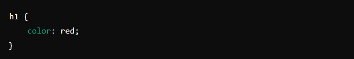
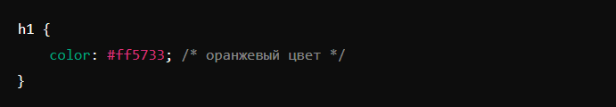
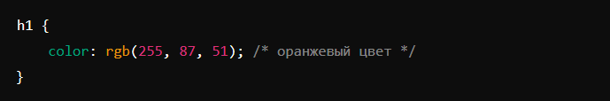
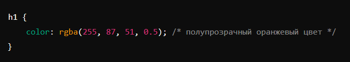

Настройка текста внутри параграфа
Цветовые модели
Цвета в CSS можно задавать различными способами. Рассмотрим основные из них.
- Названия цветов (Color Names)
- HEX-коды (Hexadecimal)
- RGB-значения (Red, Green, Blue)
- RGBA-значения (Red, Green, Blue, Alpha)
CSS поддерживает названия основных цветов, таких как red, blue, green, yellow и т.д.
HEX-коды представляют цвета в шестнадцатеричной системе счисления и начинаются с символа #, за которым следуют 6 символов (цифры и буквы от A до F).
RGB-значения задают цвет с помощью трёх чисел, которые определяют интенсивность красного, зелёного и синего цветов. Значения могут быть в диапазоне от 0 до 255.
RGBA-значения аналогичны RGB, но включают дополнительный параметр Alpha, который задаёт прозрачность цвета. Значение Alpha варьируется от 0 (полностью прозрачно) до 1 (полностью непрозрачно).
Настройка внешнего вида текста
CSS позволяет изменять внешний вид текста с помощью различных свойств шрифтов.
- Цвет и фон
- color: устанавливает цвет текста.
- background-color: устанавливает цвет фона.
- Шрифт и текст
- font-family: задает семейство шрифта.
- font-size: задает размер шрифта.
- font-weight: задает толщину шрифта (например, normal, bold, [100, 200, 300, 400, 500, 600, 700, 800, 900] — условные единицы насыщенности, где 400 — это стандартная насыщенность текста. Используются редко, так как большинство шрифтов имеют только обычное и жирное написание.).
- font-style: задает стиль шрифта (normal, italic, oblique - если у шрифта нет курсивного варианта начертания).
- line-height: задает высоту строки.
- text-align: выравнивание текста (например, left, center, right, justify).
- text-decoration: добавляет украшения к тексту (например, underline, line-through, overline).
- Отступы и поля
- margin: устанавливает внешние отступы.
- padding: устанавливает внутренние отступы.
- margin-top, margin-right, margin-bottom, margin-left: устанавливают внешние отступы по сторонам.
- padding-top, padding-right, padding-bottom, padding-left: устанавливают внутренние отступы по сторонам.
- Границы (состоят из нескольких компонентов: ширины, стиля и цвета)
- border-width: задает ширину границы.
- border-style: задает стиль границы (например, solid, dashed, dotted, double).
- border-color: задает цвет границы.
- border: комплексное значение, задает ширину, стиль и цвет.
Примеры
Варианты настройки внешнего вида заголовков